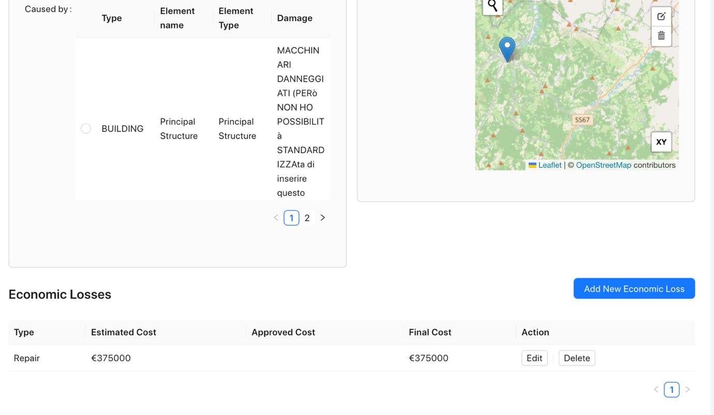
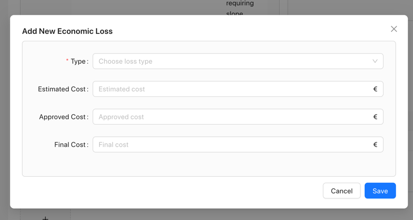

Economic losses¶
Besides physical damage, a survey can record the economic losses linked to the event and the affected asset.

To add one, click Add New Economic Loss and fill in the window that opens.

Fill in the fields with the information available from the survey, or from official documents received later.